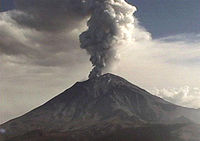
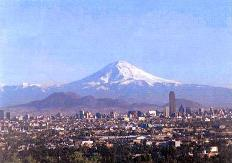
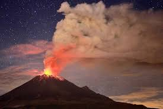
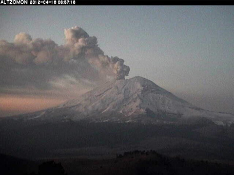
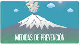
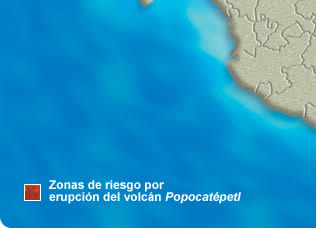
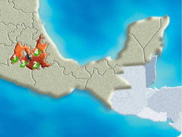
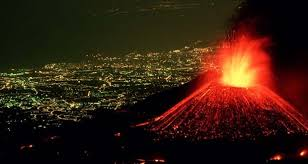
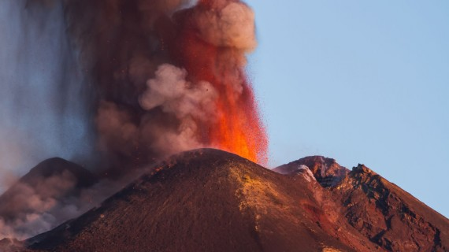
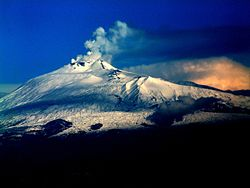

Volcan Popocatépetl
INFORMACION
Por su origen nahuatl su nombre significa “montaña que humea”, por su altura es el pico más alto de México después del Pico de Orizaba, y por su cercanía con varias poblaciones humanas se le considera uno de los volcanes más peligrosos del mundo. Tambien se le conoce como “Don Goyo” o simplemente como “Popo”.

El Popocatepetl es un estratovolcán o volcán compuesto. Se le describe como un volcan activo, de hecho, el mas activo de México. Descansa al sur de la Ciudad de México sobre los estados de Puebla, Morelos y México, en una provincia fisiografica nombrada Eje Neovolcanico o Eje Volcánico Transversal, que es una cadena de volcanes que incluye al Iztaccíhuatl, al Paricutín y al Nevado de Toluca, entre otros.
*TAMAÑO*
De apariencia casi simétrica, cubre una superficie de 283,192.53 hectáreas y tiene una altura de 5,426 metros sobre el nivel del mar. Posee un cráter elíptico de paredes empinadas con una profundidad de 150 metros desde el labio inferior, un diámetro mayor de 900 metros y un ancho total de 400 x 600 metros.

*ANTIGUEDAD*
El Popocatépetl es un volcán geológicamente joven. Se cree que tiene unos 730,000 años de antigüedad y que es remanente de volcanes antiguos que colapsaron. Su historia comenzó con la formación del volcán Nexpayantla a través de la expulsión de flujos de lava andesítica y dacítica. Años después, este volcán colapsó y en consecuencia se formó una caldera, es decir, una depresión amplia y profunda debajo de la cual se halla una cámara de magma.
*LOCALIZACION*
El Popocatépetl esta ubicado en los estados de Morelos, Puebla (45 kilometros) y el Estado de México( a 55 kilometros). Al sur de la Sierra Volcánica Transversal que constituye la espina dorsal del Altiplano Mexicano.
En el Estado de México colinda con los municipios: Tlamanalco, Amecameca, Atlauta y Ecatzingo.
Con el estado de Morelos colinda específicamente con el municipio de Tetela del Volcán.
Por la parte de Puebla colinda con Huejotzingo, San Salvador el Verde, Domingo Arenas, San Nicolás de los Ranchos y Tochimilco.

ACTIVIDAD DEL VOLCAN
*ACTIVIDAD*
Ha tenido por lo menos cuatro erupciones explosivas que colapsaron el cono, dando como resultado enormes derrumbes prehistóricos de enormes proporciones. Hace 14,000 años ocurrió una gran erupción que produjo abundantes lluvias de ceniza y piedra pómez. Durante los siguientes12 milenios han sucedido por lo menos seis grandes erupciones explosivas. La última gran erupción ocurrió aproximadamente entre los años 800 y 1,000 de nuestra era.
°1363 Comienza a humear.
°1509
°1512
°1519 y 1528 arroja humo, cenizas y piedras incandescentes.
°1530 produce solo humo.
°1539 lanza grandes llamas, piedras y cenizas.
°1562.
°1570 Para este año incrementó la actividad sísmica.
°1571 Arrojó gran cantidad de cenizas.
°1592 Arrojó vapores y cenizas.
°1642.
°1663 Arroja gran cantidad de ceniza y con ella piedras pómez.
°1664.
°1665 Estuvo arrojando cenizas por varios días.
°1697 Hizo una erupción de fuego.
°1720 Registró una nueva erupción.
°1790, 1802 y 1804 Arrojaba una columna de humo.
°1919: La erupción registrada en este año fue considerada por algunos como consecuencia de una explosión de dinamita provocada para la extracción de azufre. Los orígenes de esta actividad la inició Hernán Cortés en 1519 cuando mandó a Diego de Ordaz a que subiera el Popo pero no logró alcanzar el cráter; en cambio al año siguiente otros soldados sacaron azufre para fabricar pólvora.
°En 1947 ocurrió una erupción de consideración, para iniciar así un periodo de actividad.
°A lo largo de 1992 y 1993 aumentaron las fumarolas y los microsismos.
°21 de diciembre de 1994 registró una explosión que produjo gas y cenizas que fueron transportados por los vientos dominantes, llegando llegaron más allá del Estado de Puebla. Cabe señalar que en este año los monasterios del siglo XVI construidos en las laderas del volcán, fueron declarados Patrimonio de la Humanidad por la UNESCO. 1995 Registro una actividad fluctuante. Marzo de 1996: En esta año aumentó la actividad y se formó un domo en el cráter. 30 de abril de 1996, El popo lanza una lluvia de piedras incandescentes, provocando la muerte de cinco expertos alpinistas que exploraban el volcán. Durante este año también se registraron varios microsismos. El 30 de junio de 1997 lanzó una fumarola de 8 kilómetros de altura y 50 kilómetros de diámetro. 20 de junio del 2003. 21 de septiembre del 2003. 25 de diciembre de 2005: Se produjo una nueva explosión que provocó una columna de humo y cenizas de tres kilómetros de altura y la expulsión de lava.
Como el volcán esta activo, es constantemente vigilado y existen planes de emergencia por si hay necesidad de evacuar a los 23 pueblos que viven en sus faldas. Los encargados son el Centro Nacional de Prevención de Desastres CENAPRED, que opera en la Ciudad Universitaria, en la capital del país.
*MONITOREO*

La única manera de percibir y evaluar el estado de actividad y riesgo asociado de un volcán, es a través de la observación y vigilancia sistemática mediante diversos métodos visuales e instrumentales. Si estos se aplican en forma anticipada en las fases previas a un proceso eruptivo, es posible, en la mayoría de los casos, detectar oportunamente un cambio cualitativo y cuantitativo de la actividad que inclusive pudiese conducir a una predicción en el corto plazo de un proceso eruptivo inminente y poner en marcha, de parte de las autoridades de Protección Civil el plan de emergencia previamente establecido.

En un esfuerzo conjunto del Centro Nacional de Prevención de Desastres (CENAPRED), de la Secretaría de Gobernación, los Institutos de Geofísica y de Ingeniería , de la UNAM , y con la colaboración del Cascades Volcano Observatory, del U.S. Geological Survey, se estableció en los últimos años un complejo sistema de observación telemétrico con una central de adquisición y procesamiento de datos.
MEDIDAS DE PREVENCION
Consejos de seguridad:

• Mantente alejado de volcanes activos.
• Si vives cerca de un volcán activo, prepara un kit de emergencia que incluya gafas de seguridad, una máscara, una linterna y una radio en buen estado que funcione con pilas.
• Elabora una ruta de evacuación y ten el depósito de gasolina del coche siempre lleno.
• Evacua siguiendo las recomendaciones de las autoridades para no encontrarte lava y barro, así como rocas y escombros que puede arrojar el volcán.
*EN CUANTO CAIDA DE CENIZA*
• Antes de abandonar tu casa, ponte una camisa de manga larga y pantalones largos; usa gafas de seguridad o normales, sin lentillas. Ponte una máscara de emergencia o envuélvete la cara con un paño húmedo.
• Si no vas a evacuar, cierra puertas y ventanas, y bloquea la chimenea y otros puntos de ventilación para evitar que la ceniza entre en la casa.
•Ten en cuenta que la ceniza puede sobrecargar el tejado y puedes necesitar retirarla. Durante la limpieza, lleva elementos de protección
• La ceniza puede dañar motores y piezas metálicas, así que evita conducir. Si debes conducir, no superes los 55 kilómetros por hora.

*ESTADOS QUE AFECTARIA*
 
En general, los habitantes de las ciudades grandes: Distrito Federal, Puebla, Cuernavaca, debemos considerar que: En la ciudad no tenemos el riesgo de ser afectados por la lava ni por el material incandescente, debido a la distancia que nos separa del volcán y los obstáculos naturales del terreno. Dependiendo de la dirección del viento, algunas zonas se verían afectadas por la caída de cenizas ya frías. Este fenómeno podría oscurecer el cielo y alarmar a muchas personas, aunque vivan lejos del volcán, si no saben de qué se trata, ya que puede ser impresionante.
-
VOLCAN ETNA
Aplicacion Tres
GUSTAVO ROMAN HERNANDEZ
VOLCAN ETNA
El volcán Etna, situado en la costa este de Sicilia (Italia), también denominado Monte Etna, con sus 3,329 m de altura, está considerado el volcán activo más alto de Europa. En junio de 2013, la UNESCO le confirió el título de Patrimonio de la Humanidad y también ha sido incluido dentro de los 16 Volcanes de la Década por las Naciones Unidas


Las erupciones del Etna no son todas iguales. Algunas ocurren en la cumbre, donde hoy día hay cuatro cráteres distintos: el Cráter Noreste, la Vorágine, la Bocca Nuova y el Cráter Sureste. Otras suceden en los flancos, donde existen más de 300 ventilaciones, variando su tamaño desde pequeños hoyos en el suelo a grandes cráteres de cientos de metros de diámetro
Las erupciones en la cumbre pueden ser muy explosivas y extremadamente espectaculares, aunque rara vez amenazan las zonas habitadas alrededor del volcán. Por el contrario, las erupciones en los flancos pueden ocurrir incluso a unos pocos cientos de metros de altitud, bien en las cercanías o en las mismas áreas pobladas. Numerosos pueblos y pequeñas ciudades se encuentran cerca o sobre los conos de antiguas erupciones laterales.
